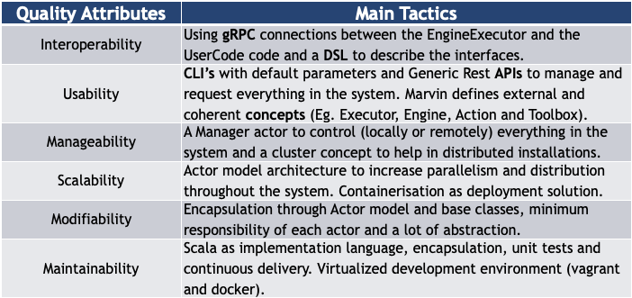
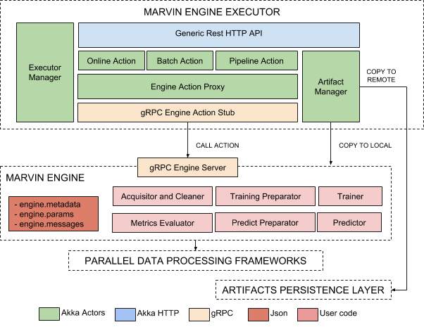

Architecture¶
In this section, we explain the architecture of Apache Marvin-AI. The platform has some specific features, such as:
- Language Agnostic capabilities: The platform must be able to support R, Python and Scala algorithms
- Parallelism capacities in many different levels (Eg. GPU, Multi-core and Multi-node)
- Deploy distributed machine learning models that are able to receive high concurrent traffic and provide response in near real-time
Platform Concept Map (High Level Integration)¶

Quality Attributes¶
For Data Scientists:¶
- Interoperability: To support different programmer languages
- Usability: To accelerate and simplify the model creation process
For Administrators:¶
- Manageability: To simplify the distributed deploy/management process
- Usability: To support from tiny to intensive loads
For Marvin Developers:¶
- Modifiability: To improve and release new versions constantly
- Maintainability: To allow all type of programmers (from beginners to experts) to contribute
Architectural Tactics¶

Context Diagram¶

Execution Flow¶

Executor and Engine¶
Cluster Admin¶

Deployment Diagram¶